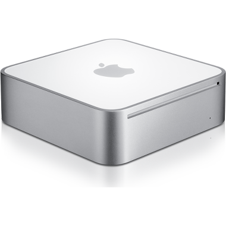
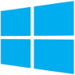

17th December 2014MacMini upgrade
 I decided recently to upgrade my forgotten MacMini model from 2006. As opposed to the current model, this machine was fully upgradeable, including not not only the memory and hard disk, but also the CPU.
The original processor was a Core Duo (32 bits), and the upgrade to a Core 2 Duo with 64 bits and far better performance was only 16 euros in eBay. Increasing the memory to 2 Gb required another 15 euros on Amazon, and I had a spare SSD with 128 Gb, so the full upgrade was cheap, although definitely took me longer than expected.
The upgrade included fiddling with the EFI -otherwise my USB 2.0 keyboard would not be recognised-, and then installing a new OS using the CD-ROM, instead of the usual USB approach. After some considerations about using FreeBSD, I decided to install Ubuntu 14.10 server (64 bits) - OsX was never an option, and, in any case, the latest version of OsX that could be installed in this machine would have been OsX Lion.
Even then, there was a minor problem: the EFI is 32 bits, and its just refuses to boot from a UEFI(X64)+BIOS bootable CD/DVD, which is precisely the format of the Ubuntu server installation disc. There is a solution: to remove UEFI support from the CD first.
The whole process is documented here.
15th December 2014Listening point


 While reading two paperbacks -which I am still distant to complete-, I had again more time to listen to audiobooks, and the last four where a mixed bag.
Julian Barnes made definitely for any time lost with the deceptive Maze Runner trilogy,
and The Safe Man by Michael Connelly was a nice and unexpected surprise from this author.
While reading two paperbacks -which I am still distant to complete-, I had again more time to listen to audiobooks, and the last four where a mixed bag.
Julian Barnes made definitely for any time lost with the deceptive Maze Runner trilogy,
and The Safe Man by Michael Connelly was a nice and unexpected surprise from this author.
9th November 2014Yosemite on GA-B75M
 I updated my Mountain Lion installation to Mavericks just one month ago;
I knew that Yosemite was on the pipeline, but I still thought that the very first release of Yosemite would have quite a few bugs, as
to rush to install it.
I updated my Mountain Lion installation to Mavericks just one month ago;
I knew that Yosemite was on the pipeline, but I still thought that the very first release of Yosemite would have quite a few bugs, as
to rush to install it.
Looking to the screenshots from Yosemite, I decided to try it on a separate hard disk; if I had problems or the looks didn't suit me that much, I could revert to Mavericks, or, as I have planning all along, to switch to Ubuntu 14.10.
As it happens, the Yosemite installation was really fast on my Hackintosh, and it looks much much better than Mavericks, so it is a keeper. I partitioned my SSD to use now as well Ubuntu, so let's see where I spend more time of both operative systems...
8th November 2014Samsung EVO 840 performance restoration without Windows
The firmware update provided by Samsung to restore the performance on the Samsung EVO 840 is, as usual for firmware / BIOS updates, a DOS program. There is also a Windows program, but it handles only NTFS partitions, so even in the case of having some Windows installation available, it seems to be unable to handle other partitions, like ext4 or HFS+. In these cases, it is definitely needed to go the DOS route.
The update from Samsung does not include, as expected, a DOS installation, but the process is very simple: download and install a FreeDOS (for example) image to a USB stick, add the firmware update and reboot the machine, booting from the USB stick.
This site contains images of FreeDOS available for different USB sizes. For drives over 2 GB, the current download is: http://ftp.chtaube.eu/pub/FreeDOS/bootable-usb/FreeDOS-1.1-memstick-2-2048M.img.bz2
After download, open the terminal and access the downloads folder, and the unzip the file:
bunzip2 FreeDOS-1.1-memstick-2-2048M.img.bz2
Insert now the USB drive and get the device name; this can be accomplished in several ways; the easiest one is, from the Os X command line, to do:
diskutil list
In my case, I can see that /dev/disk4 is a 16GB drive, with one partition (disk4s1). The first step is to unmount this drive, and then transfer the image:
diskutil unmountDisk /dev/disk4 sudo dd if=FreeDOS-1.1-memstick-2-2048M.img of=/dev/disk4 bs=512k
After some time (over 10 minutes, in my case), try reinserting the disk, which should appear as FreeDOS. Open it; now we can copy here the directory 840Per included in the provided Samsung 840 distribution. Time to reboot, and start the firmware update application!
2nd November 2014Locale issues
Whenever I setup a new system, the usual problem with the locale bites me, something along:
warning: cannot set LC_CTYPE locale warning: environment variable LC_CTYPE is UTF-8 warning: please check that your locale name is correct
In Os X or Linux, the best solution is to edit the file ~/.bash_profile, adding for English UTF:
export LANG="en_US.UTF-8" export LC_COLLATE="en_US.UTF-8" export LC_CTYPE="en_US.UTF-8" export LC_MESSAGES="en_US.UTF-8" export LC_MONETARY="en_US.UTF-8" export LC_NUMERIC="en_US.UTF-8" export LC_TIME="en_US.UTF-8" export LC_ALL=
Instead of en_US.UTF-8 is possible to just use C, or any other locale as provided by locale -a
In Debian, to ensure that the appropiate locale are installed, it is needed to run dpkg-reconfigure locales, and there select en_US.UTF-8 -also as default-.
12th October 2014KVM network restart
While working with KVM virtual networks, it arises often enough the need to edit the network definition, like editing new MAC / IP mappings. This causes all the associated guests to lose network connectivity, and it is required to detach / re-attach their network interfaces. There is a shell script to perform this operation on the default network, with a few constraints.
To avoid those constraints and allow the attachment of any network, I wrote the following python script, that requires as arguments the network or networks to reattach: (permanent link)
5th October 2014Mavericks on GA-B75M
I created my first Hackintosh in 2009, and the process required some thinking. There were already quite a few guides, and, of course, some people had done already the dirty work of working out the drivers and the mechanisms to make Os X install on alien, non Apple, hardware, but the process was definitely not simple. I did then in quick succession 3 hackintoshes, using the same approach.
Fast forward to 2012, I built a new computer and hackintoshed it again, this time with Mountain Lion. In the passed 3 years, the hackintoshing landscape had changed very much, and the process to install OsX was as easy as using the tools Unibeast and Mutibeast provided by tonymacx86. The more serious thinking at this stage was the pre-purchase steps, to ensure that the hardware was as Apple-compatible as possible.
Today I decided to upgrade my existing Mountain Lion installation to Mavericks, or, better said, to scrap the Mountain Lion system to have a clean Mavericks one. Again, the process was very simple, and all my hardware is perfectly running under OsX, missing only the VT-D functionality.
25th September 2014Shutdown -h
I use Windows less and less, and last times I only need it at two locations: at my office, to check the mail (Lotus Notes, help!!!!), and to manage the server of a shop that uses a Windows-only invoicing / accounting program (Ofipro-, rather good, with the lack of Linux support being its only drawback).
On a previous time accessing the server, I had updated the password, and changed this password on the Remote Desktop application in my macbook, but forgotten to write it in my password manager. The result: I forgot the password, and I could access the system only from that macbook, which was a bit short on convenience...
If I tried updating the password from the control panel / users manager, I was prompted to introduce the old password, no luck. But, as it comes, it is possible to change the password from the command line without entering the old password; just open a console with administrative rights and enter:
net user USERNAME NEW_PASSWORD
Put a simple password and you are good to go. Then you can use the control panel to change it properly (in case history was saved...).
Not very sure on how safe is this approach, but surely it saved me in time!
Unfortunately, I did some updates which required a restart, which requires, on a remote access, to enter on the command line:
shutdown -r -t 0 -f
[-r = restart, -t 0 = in 0 seconds, -f = force]
But of course, I had forgotten the exact syntax, so I decided asking for help:
shutdown -h
Boom! One problem: in windows, help is obtained by doing shutdown /?, and, as far as I can see, doing shutdown -h is not documented and should do nothing. Even if that means shutdown halt, or -h would be considered a comment (which is not, that requires /c), a reboot / shutdown requires entering -f to force it.
But that was exactly the result: immediate shutdown. Exactly what I was NOT needing....
25th September 2014Listening point


 While still reading paperbacks, time constraints favour my listening to audiobooks. And, as far as the narrator does a good job
-and in the vast majority of audiobooks so far, the narrator is really great-, I would say that an audiobook can be a much better experience than reading. Of course, the version needs to be unabridged, but, again, that is the usual case. From the last 4 audiobooks I read these last two months, I would highly recommend Mr Mercedes, from Stephen King.
While still reading paperbacks, time constraints favour my listening to audiobooks. And, as far as the narrator does a good job
-and in the vast majority of audiobooks so far, the narrator is really great-, I would say that an audiobook can be a much better experience than reading. Of course, the version needs to be unabridged, but, again, that is the usual case. From the last 4 audiobooks I read these last two months, I would highly recommend Mr Mercedes, from Stephen King.
2nd July 2014Ready Player One
 I just finished Ready Player One, wanting to reach the end of the story and dreading at the same time finishing it. The plot of story, the games played inside games inside games, the old computers of the 70's and early '80s, the fascination for the music and movies makes this book an instant recommendation. In fact, I listened to the audiobook, and with the great job of the narrator I would even recommended better the audio version.
I just finished Ready Player One, wanting to reach the end of the story and dreading at the same time finishing it. The plot of story, the games played inside games inside games, the old computers of the 70's and early '80s, the fascination for the music and movies makes this book an instant recommendation. In fact, I listened to the audiobook, and with the great job of the narrator I would even recommended better the audio version.
29th June 2014Ubuntu 1 / Windows 0
After my brief fighting with Windows 8 on a friend's laptop, I though I would stayed clear from Windows for a little while.
No luck; my friend updated the system to Windows 8.1, and on the process something failed. He would then be welcome with an error message, and the system would enter recovery mode. Fortunately, I had created the USB recovery drive, so it was just a matter of recovering the system... Nope. The USB stick would not be recognised. I had created the recovery partitions, as expected, provided the system with a proper USB to create the recovery drive, and no errors had been raised. But, when needed, there was no way to recover the system with that drive. I changed the UEFI options to recognise the USB stick as a valid boot option, it started the recovery process, and then informed me that something was missing on the system. What? Well, probably, some of the recovery partitions: these were available, but, in truth, I do not know what my friend had done on his 8.1 upgrade.
So, doing some general user action (system upgrade), the recovery partition is (probably) lost, and the recovery drive cannot recover the system, and cannot either reinitialise the system to its pristine status.
Fine, then, what can be done? Of course, you can always reinstall Windows, right? Of course not. You can create a recovery drive, which seems unable to reinitialise the system. If there is no recovery partitions available, no matter how big is your USB stick, Windows just doesn't install all the information needed to restart the system. I cannot stop comparing this complexity with the utter simplicity of managing the installation of a OsX or Linux system and stare in total awe.
But wondering on these complications would not help my friend recover his system. On the short time he used Windows 8 he was all but happy, and having to wait now to get (and pay!) for the installation media from Asus didn't really excite him. I proposed him trying Ubuntu and he accepted. Installation took me minutes, and the system booted in perfect state. He has been using Ubuntu since then, and, for the time being, he seems content with the system. It is a very recent Asus -N7500JV-, with SSD, and the whole hardware is properly recognised. I know that there will be issues, like trying to run a Windows program that he forgot to mention, and that cannot run well in a virtual machine or using Wine, but for the time, the great recovery mechanisms of Windows have won a new Ubuntu fan. Go figure.
21st June 2014Rails 4
I was updating a website done in Rails 3 to Rails 4, following the usual guides to have a smooth migration, which helped definitely smoothing the update. A nasty problem I found was related to the way that model associations are now handled; in Rails 3, they return an Array, while in Rails 4 its is returned a CollectionProxy; nothing to object if the new class exposes the same interface (methods), but that is not the case.
So all the calls to the suddenly deprecated methods are naturally broken. Of course, there are always good reasons to such deprecation... isn't? This discussion sheds some light on the reasoning behind: Because it causes confusion where you think you are changing the relation/association and you actually do not. The database is still the same.
So calling delete_if does not change the database, and the name is therefore confussing, so let's get ride of the method? Somebody replies here that the reasoning is ridiculous, people should know enough to save the underlying model after calling delete_if, but the answer only addresses the mention to ridiculous.... typical.
So if you have some code in Rails 3 doing something as:
model.has_many_assoc.delete_if{|c| ...}
You need to convert it to:
model.has_many_assoc.select{|c| ...}.each{|c| c.delete}
But only in some cases, as it depends in fact on the operation and association in place. Well, thanks for that, very helpful, guys!
5th April 2014Windows X
I had recently to help a friend moving a Windows 8 installation from HDD to SSD. He had bough the laptop, requested the SSD, and the morons just placed the SSD inside the laptop, but performed no installation whatsoever: the SSD was not even formatted and my friend would not see it from inside Windows.
I saw that there was the typical recovery partition, that little trick performed on the users to not provide additional media in case the initial Windows installation crashes. I committed the mistake to think that I would be able to reinstall Windows by creating a recovery USB disk, but after many tests I was only able to reach a point where I could do a clean installation, but where? Never mentioned. Perhaps to the SSD (unlikely), most likely to the HDD, again. Funny thing: if I physically disconnected the HDD, I was unable to reach any recovery point, saying that there was no recovery partition (which I had very specifically backed up to the USB stick, exactly as explained on the process to create the recovery media). I wonder what happens if the HDD really crashes.
Which would be the cost by Asus (in this case, but Dell, Samsung or Acer do exactly the same) to include a USB stick that could just reinstall the OS? Easy way, if you insert the USB stick and boot to it (not an easy task nowadays, anyway) and say yes to 3 or 100 confirmation messages. Windows is then installed from scratch with all the drivers required for that laptop -pristine installation, just what you get when you buy it new. But no, with the recovery partition trick, they use the hard disk purchased by the user, and worse, his/her time to perform that creation of recovery media. Even worse, why Microsoft makes the process so complicated? I cannot obviously compare a Windows installation to a Linux one, but I can definitely do the comparison with Os X; when I bought a new Macbook Pro, transferring the OS from HDD to SSD was a simple process, directly accomplished with the tools already provided in Os X.
At least I had the opportunity to see finally Windows 8 in action. The laptop was a very nice, sturdy, Asus N750JV, I was dutily impressed with both; Windows has come a really long way, and the interface has improved a lot. Moving between the tiles and the standard Windows interface was not so nice, but workable. Going through the process of updating the OS, not nice at all, and overall, I had the impression of incompleteness. I guess I will wait myself for Windows 9, or better, for Windows 10, which will probably be called Windows X, just to catch up.
4th April 2014Moving Windows 8 to SSD
 Quick answer: make sure your SSD can hold the content from your HDD, removing any unneeded information (or just moving it to an external drive), then use the wonderful EasyUS tool.
The explanation below comes on my personal experience moving a new Windows 8 installation on an Asus N7500JV to SSD (being the advantage here that the HDD was practically empty).
- Install EasyUS Todo Backup (Free)
- Execute it, Select CLONE -> Disk clone. The source is the HDD disk, and the SSD, the target. In this laptop, the original HDD has 5 partitions (6 in fact, as a little spare space between 2 partitions is considered also a partition):
- 100 Mb (EFI)
- 900 Mb (recovery)
- ~380 Gb : C Drive (System)
- ~530 Gb : D Drive (Data)
- 20 Gb (recovery)
- However, the C drive is mostly empty, and the D was still totally empty. Without having to manually shrink any partitions, just let EaseUS perform its magic. It creates the same structure, in only 120 Gb, as follows:
- 100 Mb (EFI)
- 900 Mb (recovery)
- ~74 Gb : C Drive (System)
- ~24 Gb : D Drive (Data)
- 20 Gb (recovery)
- Ensure that the system boots from the SSD. This can be accomplished in two ways; booting to UEFI and select the SSD as first boot drive, or, more safely, by removing the HDD from the system (just unplug the connector).
- The system boots perfectly. Migration is complete, but the HDD still has a full Windows 8 installation, and both disks, the SSD and HDD have recovery partitions. Time to cleanup.
- It makes no sense having the recovery information on the SSD, we keep it on the HDD. Execute (press Windows-R) diskmgmt.msc. On the SSD, remove partitions D (Data) and E (recovery), and extend the partition C (Systems) to cover the whole disk. This drive will be now as follows:
- 100 Mb (EFI)
- 900 Mb (recovery)
- 119 Gb : C Drive (System)
- Shutdown the system. If the HDD had been disconnected, reconnect it now, and boot again.
- Execute again diskmgmt.msc. The SSD will appear as C: unit, and the original C: unit in the HDD is now the D: drive. Remove the two big partitions in the HDD (original System and Data), and create new partition with all the space (~980 Gb), and assign it the letter D. The HDD remains as follows:
- 100 Mb (EFI)
- 900 Mb (recovery)
- ~980 Gb : D Drive (System)
- 20 Gb (recovery)
- In total, we are wasting 1 Gb of hard disk, as we have two recovery (900 Mb) partitions and the one on the SSD is not required. It is possible to check that recovery still works perfectly; as explained in this post, open a command prompt in administrative mode and execute:
REAGENTC.EXE /Info
It shows, among other details:Windows RE Location: \\?\GLOBALROOT\device\harddisk1\partition2\Recovery\WindowsRE Recovery image location: \\?\GLOBALROOT\device\harddisk1\partition5\RecoveryImage
In the same shell, doingGET-PARTITION
should show:Disk 0 1- 100 Mb System 2- 900 Mb Recovery 3- 128 Mb Reserved 4- 118.1 Gb Basic C Disk 1 1- 100 Mb System 2- 900 Mb Recovery 3- 128 Mb Reserved 4- 910.4 Gb Basic D 5- 20.01 Gb Recovery
Done! Thanks to EaseUS!
31st March 2014Hackintosh and hibernation
[Permanent link] I use a SSD on my Hackintosh, with just 128 Gb plus a HDD for Music, etc. From the 128 Gb, I use in fact only 98 Gb in OsX, and the rest goes to a Linux partition.
It is a desktop, 32 Gb of memory, usually running for months before requiring a reboot, and most of the time sleeping.Waking up is very fast, works much better than my old Vista installation (unfair comparison), or even recent Linux installations.
Last days I started having problems putting the computer to sleep: it would start the process, switching off the monitor signal, audio, and then the computer itself, just to restart immediately. Then, a message started appearing complaining that my startup disk was almost full. Checking the space didn't show anything extraordinary: the normal scenario where more and more programs get installed, more work done, and the 128 Gb are suddenly too little.
Only one file called my attention: /private/var/vm/sleepimage, at 16 Gb, but removing it seemed out of place: this file is automatically created by OsX to keep the memory saved on disk, for out of power scenarios. In fact, this was probably the case why my box didn't manage to get to sleep; having 32 Gb RAM would have required storing 32 Gb on disk, and that space was just not available (in fact, this is not necessarily the case, as the dynamic pager can page out inactive pages prior to hibernation).
One possibility was moving the file to the HDD; going to sleep and waking up would slow down, but the SSD lifetime would probably improve, not to mention the SSD free space. But then I realized that I didn't need this file. You see, OsX has several sleeping modes, which can be set using pmset, such as:
sudo pmset -a hibernatemode 3
Doing man pmset shows the possible modes, with only 3 recommended values:
- 0: no hibernation, plain sleep. RAM keeps powered, in case of power loss, full reboot is required. Default for desktops.
- 3: safe sleep, default for portables. RAM keeps powered, but is also stored on disk. Even on power loss, the prior state can be recovered.
- 25: hibernation. RAM gets saved on disk, and removes power to memory. Sleep and wake up slower.
In my hackintosh, the hibernation mode was 3 (pmset -g hibernatemode), but, in case of a power loss, I had to reboot anyway the computer, so the best solution is:
sudo pmset -a hibernatemode 0
followed by
sudo rm /private/var/vm/sleepimage
Magically, my disk space usage went from 97% to 60%. And sleeping? Thanks for asking: works perfectly; in fact, somehow faster -no more needs to store 16 Gb, even on a SSD-